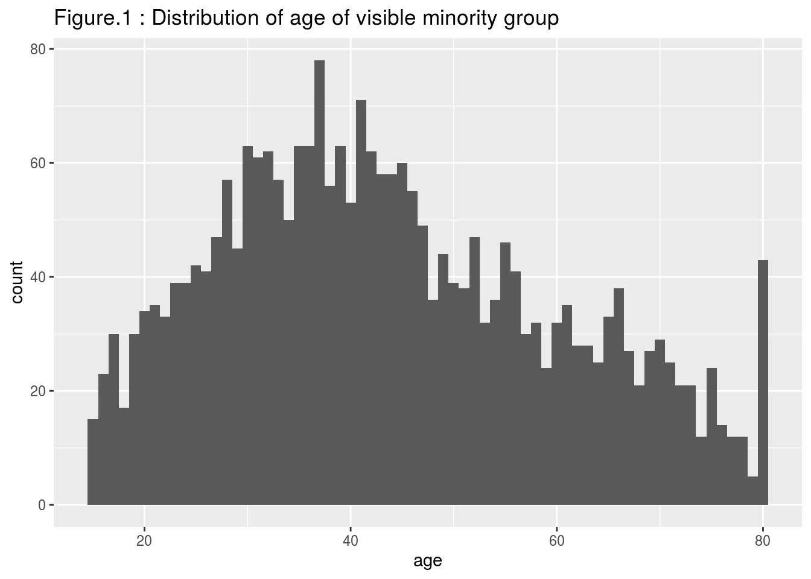
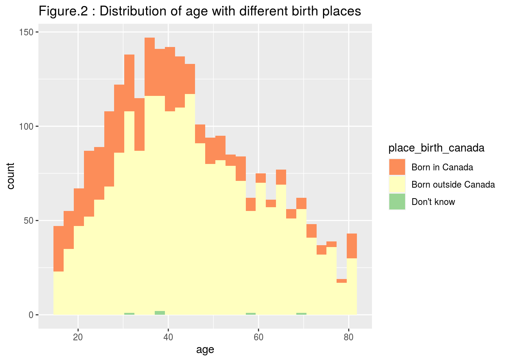
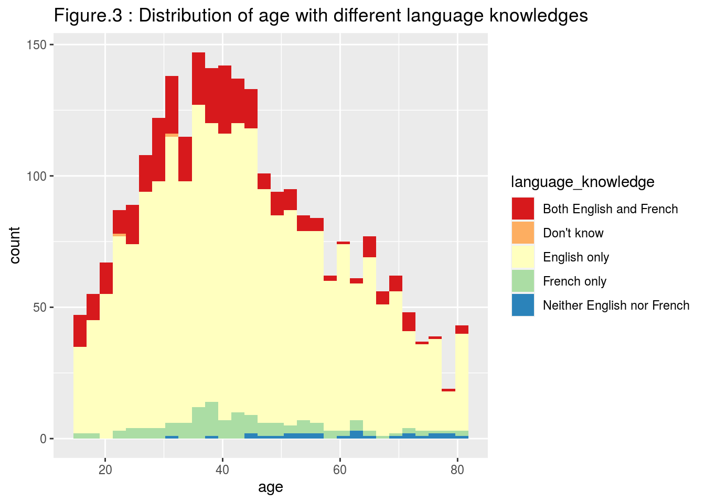
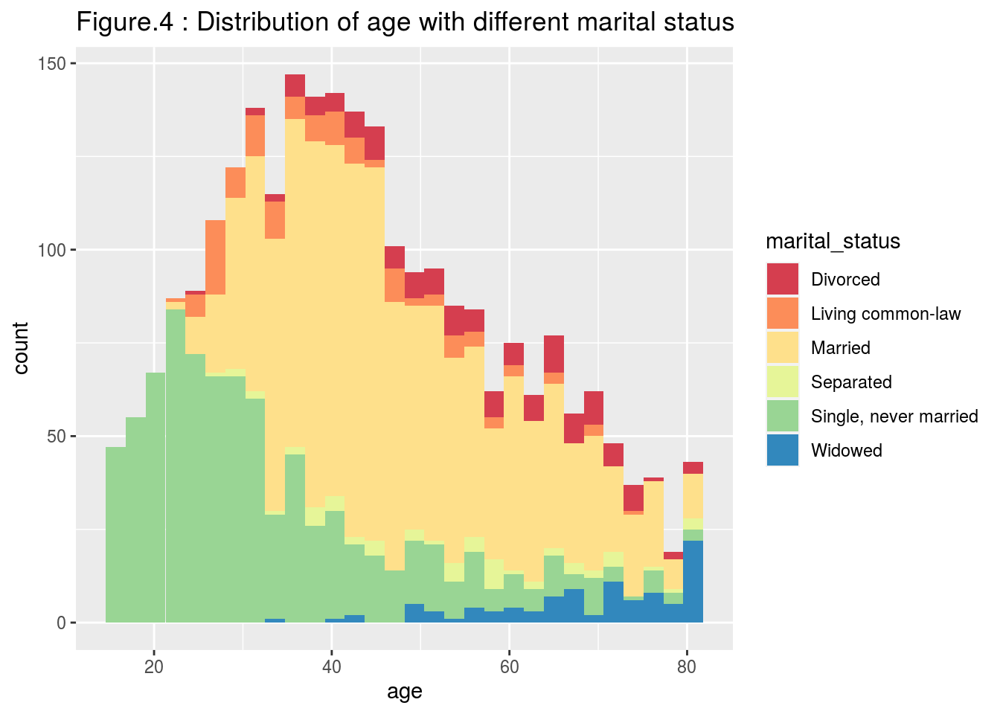
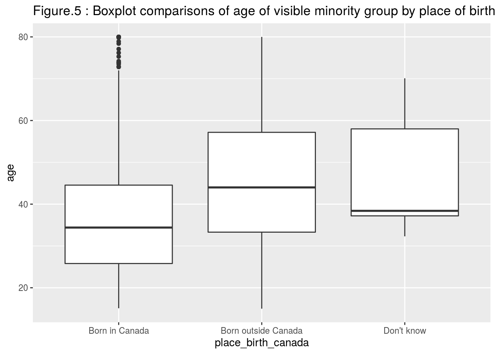

Github Link:
We explored the dataset from the Canadian General Social Survey (GSS), especially we are interested in the variables of visible minority group. We want to investigate the age distribution, language knowledge, if the place of birth is in Canada as well as their marital status. As a result, we observed that visible minority group tends to have a language knowledge of neither English nor French. In terms of place of birth, they are more likely to born outside of Canada. Furthermore, visible minority are more likely to have separated marital status.
The goal of the analysis is to use a regression model to study the common factors of visible minority group. By doing this, we are able to have insights of what Canadian visible minority group demographics is like and potentially take care of those visible minority group in need.
The data we used is from GSS. The population is all Canadian over 15 years old and the frame includes a list of telephone numbers from statistics Canada and an address register. The target sample size for the 2017 GSS was 20,000 whereas the actual number of respondents was 20,602, a little bit over the target sample size. The data collection was by the mean of telephone calling from 9:00 a.m. to 9:30 p.m. Mondays to Fridays and interviewing from a different time slot. The overall response rate for the 2017 GSS was 52.4%. To deal with the non-response, the data collectors try to re-contact people multiple times.
Since the response variable of our model is a binary of whether the individual had ever had affairs (Yes or No). It is very natural for us to use the logistic regression model to study the odds of individual who is in the visible minority group which also included all the interested confounders:
\[\begin{align*} log(\pi_{i}/1-\pi_{i}) = \beta_{0}+\beta_{2}x_{Age,i}+\beta_{1}I_{Don’t know English,i} +\beta_{2}x_{English only,i}+\beta_{3}x_{French only,i} \\ +\beta_{4}I_{Neither English nor French,i} +\beta_{5}I_{Born outside Canada,i} +\beta_{6}I_{Don’t know birth place,i}+\beta_{7}I_{Living common-law,i} \\ +\beta_{8}I_{Married,i} +\beta_{9}I_{Separated,i}+\beta_{10}I_{Single, never married,i} +\beta_{11}I_{Widowed, never married,i} \end{align*}\]

We can see from the figure one, the distribution of age of visible minority group is slightly right skewed with a spike at very large age group over 80 years old.
 From figure 2, we see a slightly right skewed distribution of age with different places of birth, compared group to group of different places of birth, the distribution seems to be similar.

From Figure 3, we observed very few people in visible minority speak French or both languages and most of them speak English only.

In the Figure 4, the plot showed us that single marital status has a age distribution of right skew whereas the widowed status has a left skew to it.

From this plot, we observed that people in visible minority group that is born in Canada is right skewed whereas those who born outside Canada is symmetric almost with mean around 45 years old.
| Estimate | Std. Error | z value | Pr(>|z|) | |
|---|---|---|---|---|
| (Intercept) | 4.7339104 | 0.3998106 | 11.8403839 | 0.0000000 |
| age | 0.0242340 | 0.0042387 | 5.7172675 | 0.0000000 |
| language_knowledgeDon’t know | -4.4419795 | 1.1524151 | -3.8544962 | 0.0001160 |
| language_knowledgeEnglish only | -0.3252270 | 0.1859247 | -1.7492410 | 0.0802494 |
| language_knowledgeFrench only | -0.1748686 | 0.3032045 | -0.5767349 | 0.5641185 |
| language_knowledgeNeither English nor French | -1.6124351 | 0.5260017 | -3.0654558 | 0.0021734 |
| place_birth_canadaBorn outside Canada | -2.6728752 | 0.1443334 | -18.5187585 | 0.0000000 |
| place_birth_canadaDon’t know | -3.3337550 | 0.4728117 | -7.0509151 | 0.0000000 |
| marital_statusLiving common-law | 0.2120334 | 0.3680045 | 0.5761707 | 0.5644998 |
| marital_statusMarried | -0.2113629 | 0.2682611 | -0.7879000 | 0.4307552 |
| marital_statusSeparated | -0.8528582 | 0.3590816 | -2.3751100 | 0.0175437 |
| marital_statusSingle, never married | 0.0509956 | 0.3012137 | 0.1693005 | 0.8655603 |
| marital_statusWidowed | -0.4702231 | 0.3421878 | -1.3741665 | 0.1693900 |
From the coefficient output, we could know that there are several statistically significant variables including marital_statusMarried, place_birth_canadaDon’t know, place_birth_canadaBorn outside Canada, language_knowledgeNeither English nor French, language_knowledgeEnglish only as well as age. In terms of marital status, we observed that the visible minority group are more likely to be separated compared to those people that are not in visible minority group. The visible minority group have greater chances of either knowing English only or not at all and they mostly were born outside of Canada.
Since we know that the visible minority group tend to have less language capability and were mostly born outside of Canada, it is very difficult for them to live in the country and we could use these data to have a better idea of how to take care of these people. Furthermore, we could help these visible minority from social and cultural points of view.
One weakness in the data analysis is the response rate of this dataset is only a little bit over 50%, so if we would like to have a more representative dataset we might want to choose a different year with less non-response and get a better coverage of the whole population.
Since there are so many variables in this dataset, it will be very difficult to include all in the model. If we would like to fit a more complicated model, we will need to check if there is any covariance between each variables or we can fit multiple regression models depending on different aspects of the questions we want to answer.
Data Cleaning, Authors: Rohan Alexander and Sam Caetano Contact: rohan.alexander@utoronto.ca
Wickham et al., (2019). Welcome to the tidyverse. Journal of Open Source Software, 4(43), 1686, https://doi.org/10.21105/joss.01686
R Core Team (2020). R: A language and environment for statistical computing. R Foundation for Statistical Computing, Vienna, Austria. URL https://www.R-project.org/.
Hadley Wickham, Romain François, Lionel Henry and Kirill Müller (2020). dplyr: A Grammar of Data Manipulation. R package version 1.0.2. https://CRAN.R-project.org/package=dplyr
H. Wickham. ggplot2: Elegant Graphics for Data Analysis. Springer-Verlag New York, 2016.
Yihui Xie (2020). knitr: A General-Purpose Package for Dynamic Report Generation in R. R package version 1.30.
Yihui Xie (2015) Dynamic Documents with R and knitr. 2nd edition. Chapman and Hall/CRC. ISBN 978-1498716963
Yihui Xie (2014) knitr: A Comprehensive Tool for Reproducible Research in R. In Victoria Stodden, Friedrich Leisch and Roger D. Peng, editors, Implementing Reproducible Computational Research. Chapman and Hall/CRC. ISBN 978-1466561595